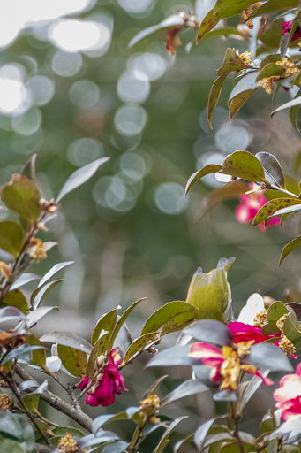
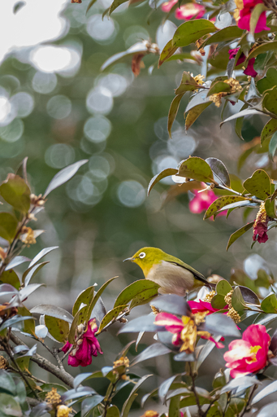
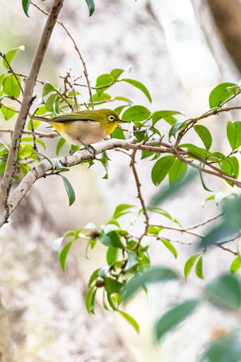
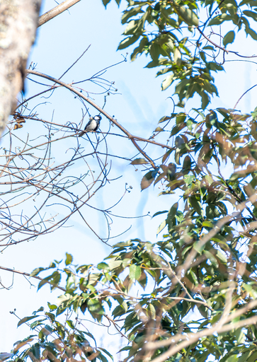
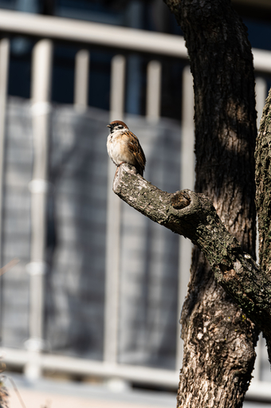
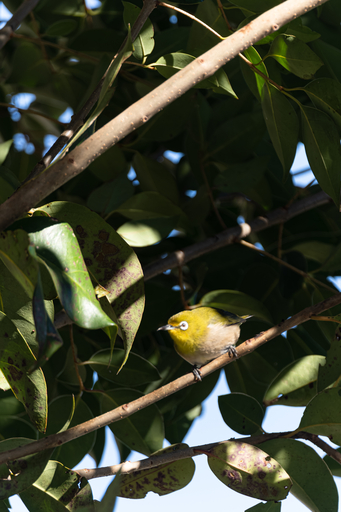

今日は訪問看護の日。先週から看護師さん二名つきそいで同伴散歩をメニューにしている。医療上の位置づけとしてはデイケアと同様リハビリテーションになる。
先週も最寄りの公園まで歩いたが、今日も同じ公園に。
それで今日は鳥見たさ全開装備で PENTAX KP に HD PENTAX-DA 55-300mmF4.5-6.3ED PLM WR REを取り付け Cotton Carrier Skout で身につけ、KOWA SVⅡ 42-10 も首からぶら下げで近所の公園に向かった。
最近ヒヨドリがかなり多いという話やメジロが出てきてるので見れるといいんだけど、といったようなオタクな話を看護師さんにしながら、ときおり双眼鏡を看護師さんに渡して見てもらいながら公園まで移動。
今日は以下のようなものが見れました。
以下写真。



１枚目の写真はなんだ？と思われるかも知れませんがメジロです。実際に見るとわかりますがあの鮮やかな黄緑は保護色なんですね。

シジュウカラはかなり上の梢にばかりいて下の方には降りてきてくれませんでした。

なんかトトロっぽいスズメがいたのでパシャリ。

団地の棟のすぐ脇に植えられている木の茂みの中にメジロが。この下は人が普通に往来しています。証拠ということで撮っておきました。
コゲラを撮りたい！！そう思って午後から再び公園に向かったのですが鳥果はゼロした。それどころか午前中はあんなにいた野鳥たちがまったくいません。鳥見は午前中が勝負なのかもしれません。